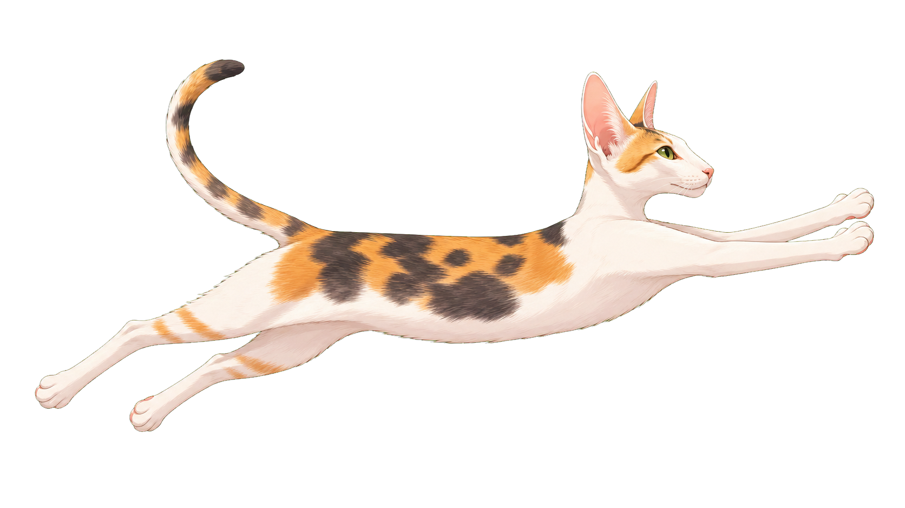
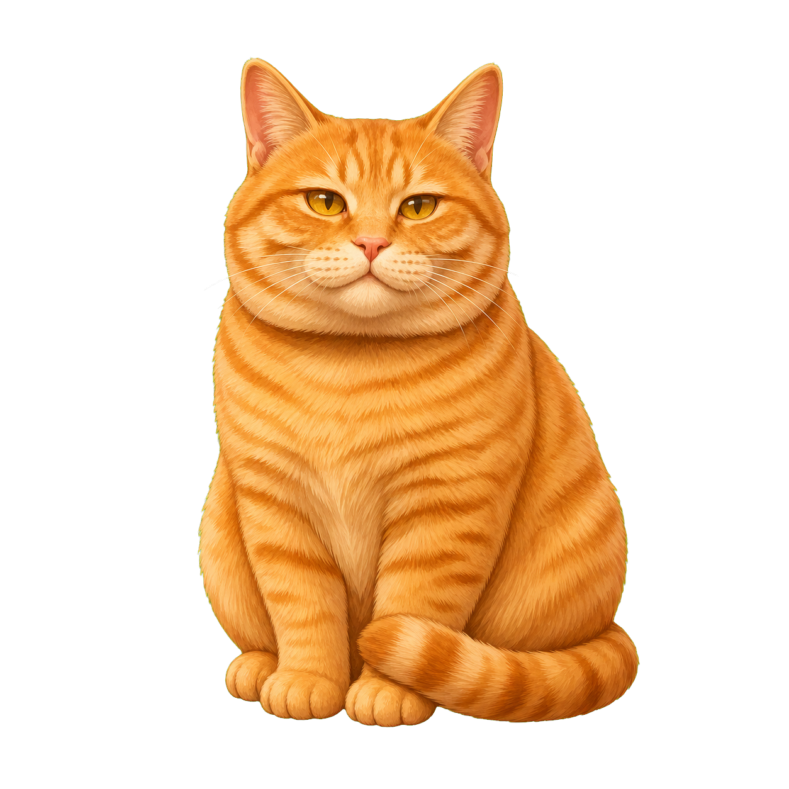
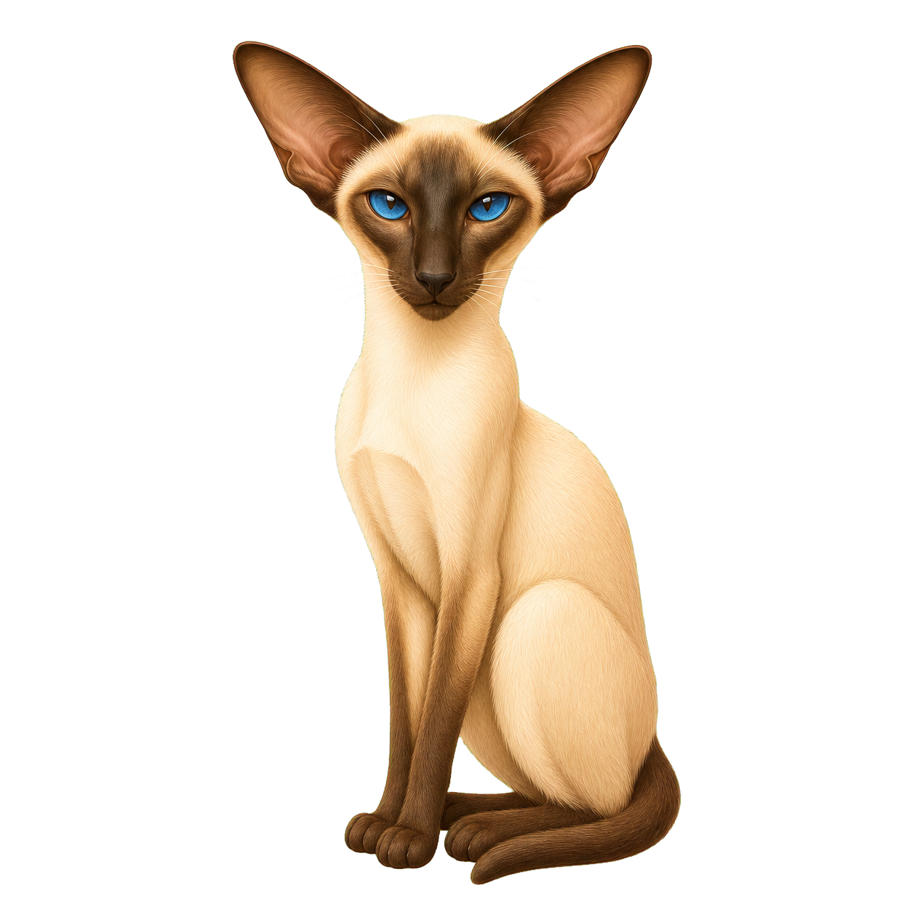
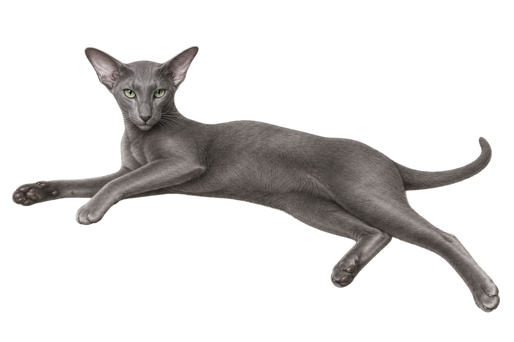
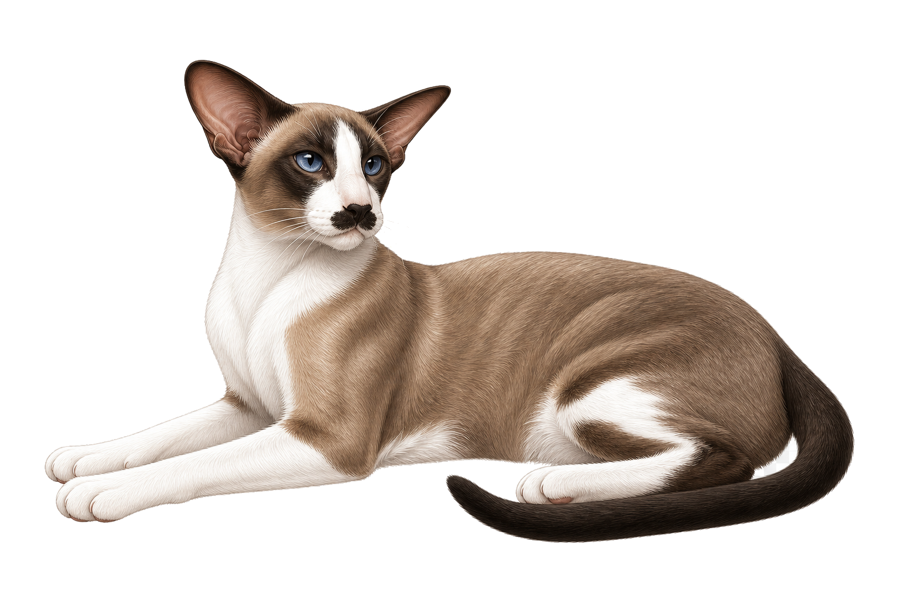

⌛
到点喵你
默认工作 60 分钟后出现，休息 10 分钟后自动回到下一轮。
它不是待办，也不是复杂番茄钟。它只负责在你坐太久时，派猫猫来轻轻打断一下。
默认工作 60 分钟后出现，休息 10 分钟后自动回到下一轮。
休息时每个屏幕都会出现大大的猫咪和倒计时，提醒你真的该离开座位了。
想主动休息时，可以从菜单栏把猫猫叫出来，提前给自己一个小空档。
临时有事时可以中断休息，也可以按 Esc 或 Command + . 立刻回到电脑前。
内置泰格、丽丽、大橘、Rose、冰冰、基基。今天想让谁来喊你，就在菜单里切换。
没有 Dock 图标和主窗口，状态栏直接显示工作、休息、暂停和剩余时间。
不管你的工作流，但会认真管一下你的久坐。
启动后 CatBreak 蹲进菜单栏，开始悄悄数时间。
到点后猫咪来到屏幕前，休息倒计时也一起出现。
起身、喝水、活动肩颈，把眼睛从屏幕上抱下来一会儿。
休息结束后猫猫回去，下一轮工作计时重新开始。
泰格、丽丽、大橘、Rose、冰冰、基基都住在同一个 App 里，今天谁上班，菜单里说了算。
make release默认出场，稳稳把你带去休息。

温柔出爪，轻轻提醒你眨眨眼。

份量很足，提醒也很有存在感。

优雅值班，把休息说得很自然。

灰蓝色东短气质，安静但很有压迫感。

大耳朵、小胡子，认真问你还要不要继续坐着。